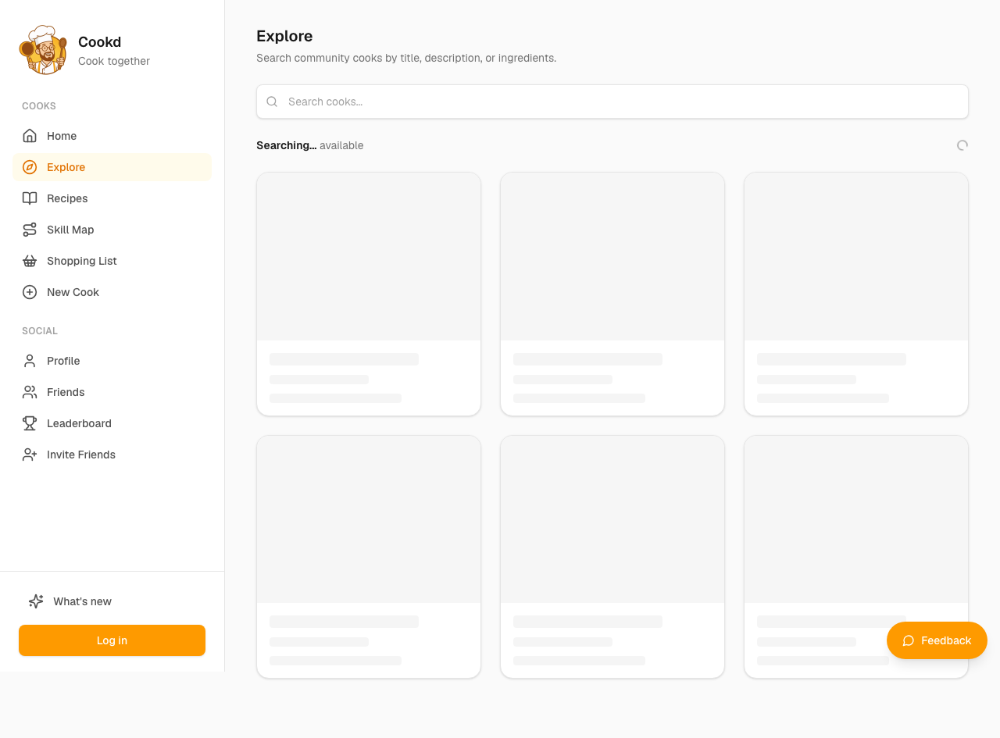
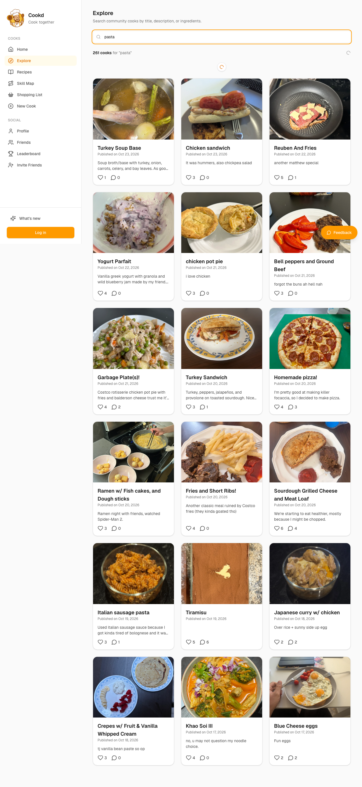
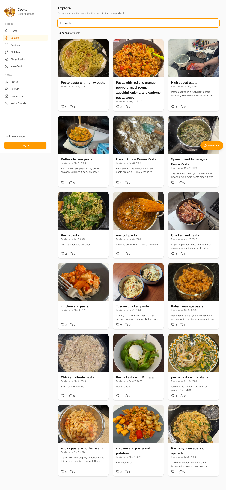
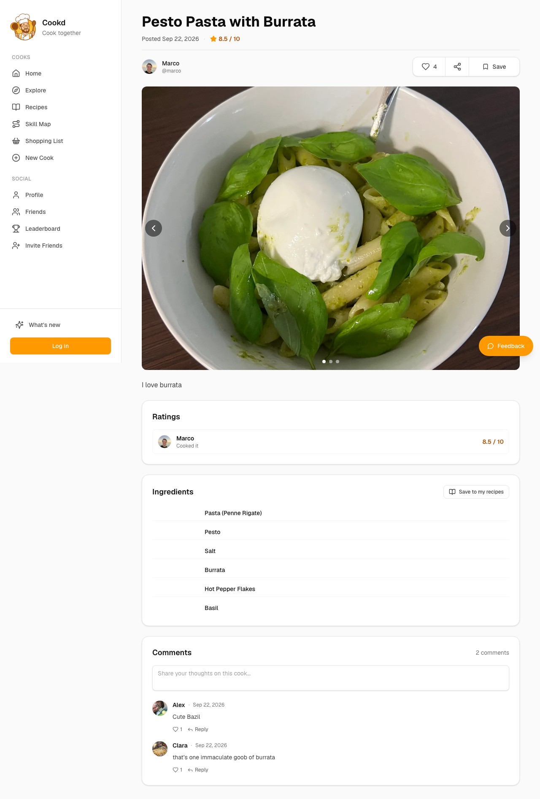

Maya — Skeptical first-time visitor who was sent a link by a friend
You got a link from a friend who said 'join Cookd, it's fun' and you have no idea what it is. You'll give it about a minute to explain itself before you bail.
abandonedskimmer patience 2/57 steps
Debrief
Would not keep using it · score 2/10 — I couldn't work out what Cookd is after about six clicks, nothing had photos, and the one recipe page I opened was slow to load. Nothing gave me a reason to make an account just because my friend asked. I'd only come back if my friend explained it to me or showed me something on their phone.
| Goal | Outcome | Notes |
|---|---|---|
| Figure out in plain terms what this site is and whether it's something I'd actually use | failed | I spent about six clicks and never got a one-line explanation. The landing page, What's new, Explore and a recipe page all failed to say what Cookd is. Even by the end I couldn't say whether a 'cook' is a person, a recipe or a meal log. I texted my friend that I didn't get it. |
| Look at a couple of other people's cooks to see if they're interesting or just show-offy | partial | I did eventually open one: Marco's Pesto Pasta with Burrata, 8.5/10, ingredients, two comments, 4 likes. But it was text only, with no photo I could see, and it loaded slowly. I couldn't tell if it was interesting or show-offy because I had nothing visual to judge by. The search results were also odd: soup and parfait for 'pasta'. |
| Decide if I'd make an account just because my friend asked | abandoned | Nothing showed me a reason to sign up. The only prompts were a Log in button and greyed-out Like and Save buttons. My friend saying it's fun isn't enough when the site itself shows me nothing. |
Frictions
- step 0: The landing page didn't tell me what Cookd is, so I guessed and clicked 'What's new'.
Expected: A one-line explanation and a photo or example right at the top. · Happened: The first thing I could click that looked plausible was a changelog. The menu had Skill Map, Shopping List, Leaderboard and New Cook, and I couldn't tell what any of them meant. · Why it matters: I give a site about a minute. If the home page doesn't say what it is, I guess at menu items and leave. The jargon made it worse.
- step 0: 'What's new' is just release notes.
Expected: An explanation of the product, or at least something I could understand. · Happened: One changelog entry about a 'home for Cookd updates', which means nothing to a new visitor. · Why it matters: It cost me a click and taught me nothing. The label sounded like an intro for newcomers, and it isn't.
- step 1: Explore opens as an empty search box.
Expected: A grid of recent or popular cooks with big photos, browsable without typing. · Happened: Just a search field and a 'Searching... available' line I couldn't make sense of. · Why it matters: I don't know what to search for in an app I don't understand. Without a default feed I can't see any real content without effort.
- step 2: The 'pasta' search showed results that didn't look like pasta, and none had photos.
Expected: Pasta dishes with photos and a short description each. · Happened: 261 results, with Turkey Soup Base, a chicken sandwich, Reuben and Fries and a yogurt parfait at the top, shown as tiny text and numbers. · Why it matters: A food site without pictures feels dead, and irrelevant results make me think the search is broken. 261 items is too many for me to sift through on my phone.
- step 3: My click on a result failed because the element I targeted didn't exist on the page.
Expected: The result would open. · Happened: Nothing happened, and I had to re-read the list and try again. · Why it matters: I count a failed attempt as one of my three tries, so I was already close to bailing.
- step 4: The recipe page showed 'Loading...' everywhere.
Expected: A recipe page with a photo, a description and some hint of what a 'cook' is. · Happened: Only 'Loading...', a Log in button and disabled Like and Save buttons. It took a while before the real content appeared. · Why it matters: On my phone between other things, I won't wait on a blank page. The greyed-out buttons also looked like they were nudging me to log in before I'd seen anything.
- step 5: Even the finished recipe page never explained what Cookd is.
Expected: A line like 'Cookd is where people log what they cook' or a link to learn more. · Happened: Just Marco's recipe with a rating, ingredients, two comments and 4 likes, and no photo I could see. · Why it matters: This was my last chance to get the point of the product and it didn't help, so I left without understanding why I'd want an account.
Missing features
- A one-line explanation of the product with a clear call to action, at the top of the landing page — A first-time visitor like me needs to know what Cookd is within seconds, in plain words.
- A default browse feed with big photos on Explore, with no login and no typing — I want to see real cooks first, then decide whether to sign up.
- Photos on search results and recipe pages — For a food site, photos are how I judge whether something is interesting or just show-offy.
- Better search relevance, plus filters or categories — 'Pasta' returning soup and parfait made the search feel unreliable, and I need a way to narrow down 261 results.
- Plain-language labels or short tooltips for Skill Map, Leaderboard and New Cook — I had no idea what these meant in a cooking context.
- Fast-loading recipe pages with a skeleton or placeholder instead of a bare 'Loading...' — A page that sits blank makes me assume it's broken.
Liked
- Once the search results matched the term, the list was at least readable.
- The Pesto Pasta recipe page had a clear rating (8.5/10) and an ingredient list, which is the kind of real content I wanted to see.
- I could look at recipes without being forced to log in or hand over my email.
Replay — Goal → Action → Expectation → Result → Friction
Step 0 · https://cookd.ca/
Goal: Figure out in plain terms what this site is and whether it's something I'd actually use
Thought: Okay, so people post what they cooked and rate it? Like a food diary? Cool, but I still don't get the point. 'Cook together' could mean anything. Let me check 'What's new' to see if it explains itself.
Action:
click #11Expectation: A short explanation of what Cookd is, ideally one or two sentences, maybe with a screenshot or example.
Result: Clicked 'What's new'. It's a changelog with one entry from October 18, 2026 saying there's a 'home for Cookd updates'. Nothing about what the app is.
Friction (4/5): I expected 'What's new' to explain the product, but it's just release notes. It tells me nothing about what Cookd is for. The menu has Skill Map, Shopping List, Leaderboard, and New Cook, and I don't know what any of them mean in a cooking app.
Step 1 · https://cookd.ca/whats-new
Goal: Figure out in plain terms what this site is and whether it's something I'd actually use
Thought: Ugh. Still no idea what this is. The logo says 'Cook together' so maybe it's a social cooking thing? I'll try Explore, it usually shows what an app is about. If that doesn't work I'm out.
Action:
click #2Expectation: A browsable grid of cooks or recipes with photos, so I can see what people are actually doing on it without signing up.
Result: Clicked 'Explore'. It's a search box that says 'Search community cooks by title, description, or ingredients.' There's no grid of photos showing up, just the search field and a 'Searching... available' line that doesn't mean anything to me.
Friction (4/5): I expected Explore to show me a grid of real cooks with photos so I could browse. Instead I got an empty search box and nothing to look at. I'd have to type something to see anything, and I don't know what to type. Also I've now clicked three things and still can't say what this app is in one sentence.

Step 2 · https://cookd.ca/explore
Goal: Figure out in plain terms what this site is and whether it's something I'd actually use
Thought: Third try and I'm still lost. Fine, I'll search for something I'd cook, like pasta, and see if any results come up. If nothing shows, I'm done.
Action:
type #13 “pasta”Expectation: A list of pasta cooks with photos and maybe a short description of what each one is.
Result: Typed 'pasta' and hit enter. It says '261 cooks for "pasta"', but the first results are Turkey Soup Base, a Chicken sandwich, Reuben And Fries, and a yogurt parfait. Most of them have nothing to do with pasta, and there are no photos, just tiny text and a number.
Friction (4/5): Searching 'pasta' should give me pasta. Instead I got soup, sandwiches and parfaits, and 261 results is too many to sort through. There are also no photos anywhere, even though I asked for big ones. After three tries I still can't say what Cookd is in one sentence, and the results don't even match what I searched for.

Step 3 · https://cookd.ca/explore?query=pasta
Goal: Figure out in plain terms what this site is and whether it's something I'd actually use
Thought: Three tries and still nothing. The search is broken or just doesn't work the way I expect. I'll open the Tiramisu one, it has the most comments, so maybe people actually care about it. If that's a dud, I'm out.
Action:
click #67Expectation: A full cook page with a big photo, a description of what was made, and maybe a sentence about why it's on the site.
Result: there is no element [67] on this page
Friction (3/5): Okay, the results match now, which is better. But the page is still just text and numbers, no pictures, even though I'd expect a food site to have them. And I still don't know what Cookd is. The search box says 'cooks' but I don't know if that means people cooking or what. My last attempt to click a result failed because the id was wrong, so I'm reading from this new list.

Step 4 · https://cookd.ca/explore?query=pasta
Goal: Figure out in plain terms what this site is and whether it's something I'd actually use
Thought: Pasta stuff finally shows up, I guess. Still no clue what the little numbers are or what a 'cook' is supposed to be, and no pictures at all. I'll open the Pesto Pasta with Burrata one, it's got a short comment that sounds like a real person wrote it. If that page doesn't explain Cookd in a sentence, I'm done.
Action:
click #67Expectation: A recipe page with a photo, a description of the dish, and something that explains what a cook on this site is.
Result: Clicked the Pesto Pasta result. The page says 'Loading...' everywhere, with no photo, no recipe text, and no explanation. The only real things are a 'Log in' button and a bunch of disabled Like and Save buttons.
Friction (5/5): I clicked a recipe and it's just 'Loading...' with nothing on it. The Like and Save buttons are greyed out, so I can't even interact unless I log in. I still don't know what a cook is or what Cookd does, and I'm three clicks in with nothing to show for it.

Step 5 · https://cookd.ca/recipe/178bbe3f-898b-41da-bf9f-f6ea81faa7a6
Goal: Figure out in plain terms what this site is and whether it's something I'd actually use
Thought: Ha, it's just loading and then nothing. Greyed out buttons and a login wall. My friend said it's fun, but I don't see anything fun here. I'm not making an account to find out what this is. I'm done.
Action:
give_up_goalExpectation: Nothing useful loads, so I'm leaving the site and texting my friend that it's not for me.
Result: The page finally loaded. It's Marco's Pesto Pasta with Burrata, rated 8.5/10, with an ingredient list, two short comments, and 4 likes. Still no photo in the text I can read, and nothing on the page says what Cookd is.
Friction (4/5): It took a while to load, and once it did it's just one person's recipe with comments. I still don't know what Cookd is for, what a 'cook' means, or why I'd want an account. I expected the page to explain the product, and it doesn't.

Step 6 · https://cookd.ca/recipe/178bbe3f-898b-41da-bf9f-f6ea81faa7a6
Goal: Figure out in plain terms what this site is and whether it's something I'd actually use
Thought: Oh, it loaded now. Okay, it's a recipe with a rating and some comments, kind of like a food blog with likes. But nothing tells me what Cookd is or why I'd come back. I'm not making an account because my friend said it's fun. I'm texting her that it's not for me.
Action:
finishExpectation: I leave the site and text my friend that I didn't get what it's about, so I'm not signing up.
Result:
